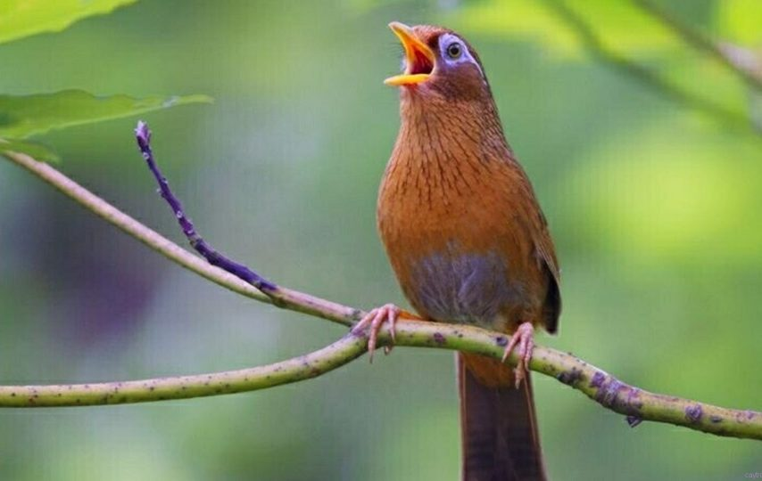
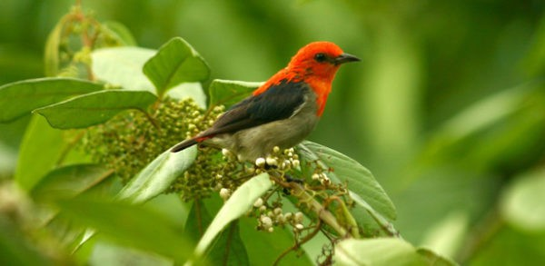
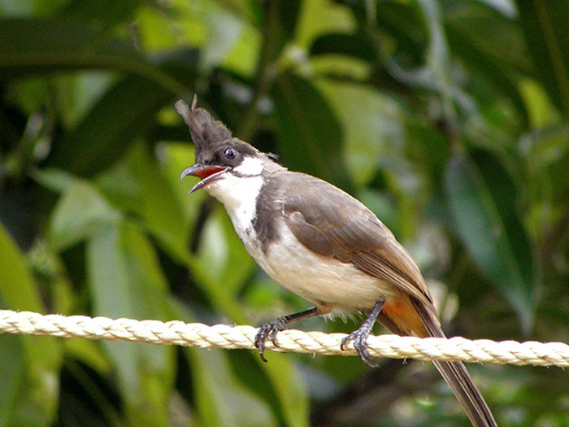
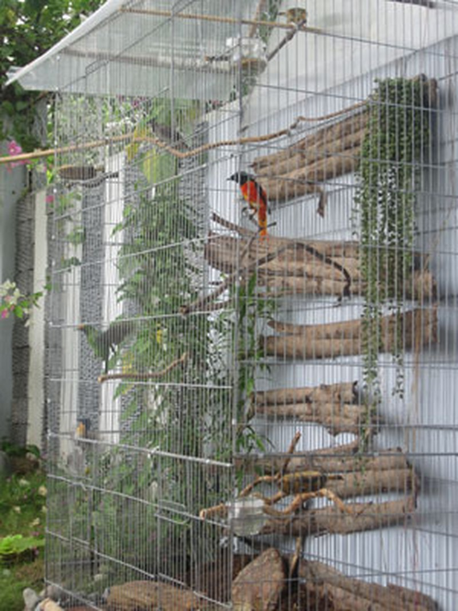

Cách Nuôi Chim Cơ Bản Cho Người Mới Bắt Đầu
Hướng dẫn cách chăm sóc, cách nuôi chim trong nhà cho người mới bắt đầu chuẩn như chuyên gia
Chim cảnh được thuần hóa và nuôi dưỡng trong nhà từ lâu. Việc nuôi chim cảnh đã trở thành một thú vui tao nhã của tầng lớp trung thượng lưu. Hiện nay, việc nuôi chim cảnh được phổ biến hơn xưa. Tuy nhiên còn nhiều người chưa biết cách nuôi và chăm sóc chim cảnh đúng chuẩn. Hôm nay, công ty Gấu Vàng sẽ hướng dẫn các bạn mới bắt đầu tập nuôi chim cảnh các kĩ thuật sau đây.
1. Chọn loại chim cảnh nuôi trong nhà

Việc đầu tiên cần làm là bạn phải xác định mình nuôi chim cảnh trong nhà để làm cảnh hay để nghe chim hót. Rất nhiều người không xác định rõ mục đích nuôi chim cảnh của mình nên cứ lựa chọn đại một loại chim nào đó về nuôi. Không bao lâu lại thấy chán và bỏ bê những chú chim của mình.
Sau khi đã xác định được mục đích nuôi chim cảnh của mình thì hãy lựa chọn chim cảnh theo cách
thức như sau:
- Chim nuôi cảnh thì lựa chọn các loại manh manh, sắc ô, sắc nhật, yến phụng, két
- Chim nuôi hót thì lựa chọn họa mi, các loại chích chòe, khuyên, sơn ca , yến hót , chim oanh.
Đặc biệt, nếu chọn chim để hót thì hãy lựa chọn những chú chim trống vì chim trống hót hay hơn
chim mái.
2. Nắm rõ cách phân loại chim
Sau khi đã chọn được loại chim yêu thích của mình thì việc tiếp theo là nắm rõ cách phân loại chim. Chim cảnh thường được phân ra làm 3 loại:
- Chim bổi là những con đã trưởng thành bắt được từ thiên nhiên. Nhược điểm của loại này là rất khó nuôi và khó thuần dưỡng, cơ hội sống sót không cao nhưng ưu điểm là khi đã sống thì hót rất hay vì giữ được giọng chim rừng

- Chim chuyền: là những con vừa mới trưởng thành, loại này thì dễ nuôi hơn và dễ tập cho dạn người. Tuy nhiên, nhược điểm là mất đi giọng rừng nên bạn phải siêng mang chim đi dợt thì chim mới hót hay.
- Chim con được nuôi từ nhỏ: loại này cần nuôi dưỡng và chăm sóc tốt để chúng phát triển khỏe mạnh. Nhược điểm là chim dễ chết, nếu nuôi không khéo sẽ không khỏe mạnh và hót không hay. Ưu điểm là chim được nuôi từ nhỏ nên rất gần gũi với chúng ta, dễ huấn luyện hơn các loại khác.
3. Kĩ thuật nuôi và thuần dưỡng
Khi đã xác định nuôi chim cảnh hót bạn phải tính tới chuyện bỏ ra 1 khoảng thời gian ít nhất 1 tiếng/ ngày để chăm sóc cho nó chim cần được ăn , được tắm , và tắm nắng thì mới khỏe mới hót hay.
Thức ăn của chim phải đầy đủ dưỡng chất và phù hợp trong từng giai đoạn nuôi. Ví dụ như lúc mới mua về chim chưa quen ăn bột bạn phải cho chim ăn những thức ăn tươi như cào cào, sâu gạo. Sau đó tập cho chim ăn bột bằng cách pha bột vào cào cào và sâu sau đó tăng dần lượng bột lên cho đến khi bột là thức ăn chính và sâu , cào cào chỉ là thức ăn bổ sung.
Bột cho chim ăn được làm từ đậu phộng rang chín và xay ra trộn với lòng đỏ trứng gà sau đó sấy khô và bổ sung thêm 1 vài chất dinh dưỡng tùy mỗi người.
4. Chọn lồng nuôi chim cảnh trong nhà

Việc chọn lồng nuôi chim cũng rất quan trọng tùy loại chim mà ta chọn kích cỡ lồng khác nhau lồng rộng quá chim sẽ nhát và khó thuần lồng chật quá sẽ làm hư lông và chim không được thoải mái . Thường những con chim khi mới mua về thì nên có cái áo lồng để chim không bị nhát và áo lồng dc mở từ từ cho tới khi chim thật sự dạn buổi tối nên áo lồng lại để chim không bị giật mình do tác động bên ngoài và cũng để tránh gió.
Cuối cùng và quan trọng hơn hết chính là “mẹo” chế biến thức ăn, đồ uống phù hợp cho từng giống loài chim, cho ăn gì, uống gì, khi nào, ra sao để chúng đạt được khả năng cao nhất về sở trường mỗi loại và đúng với ý thích của người đã bỏ công chăm sóc: hót, đá, cảnh, sinh sản.
Trên đây là các kĩ thuật lựa chọn giống chim, cách chăm sóc chim và cách chọn lồng chim mà công ty Gấu Vàng muốn chia sẻ với các bạn. Hy vọng bài viết này sẽ hữu ích cho các bạn mới bắt đầu tập nuôi chim cảnh.